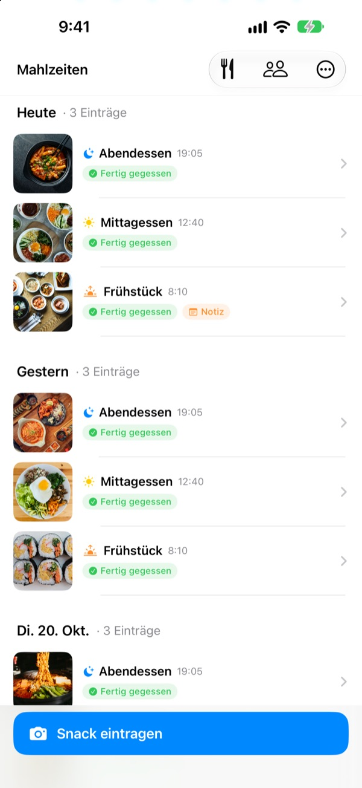
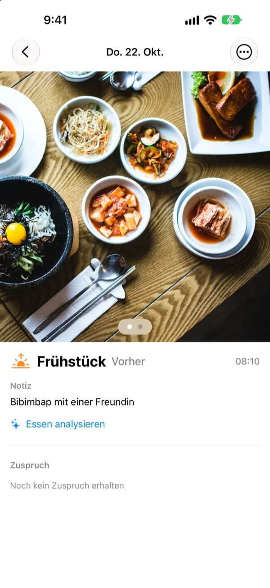
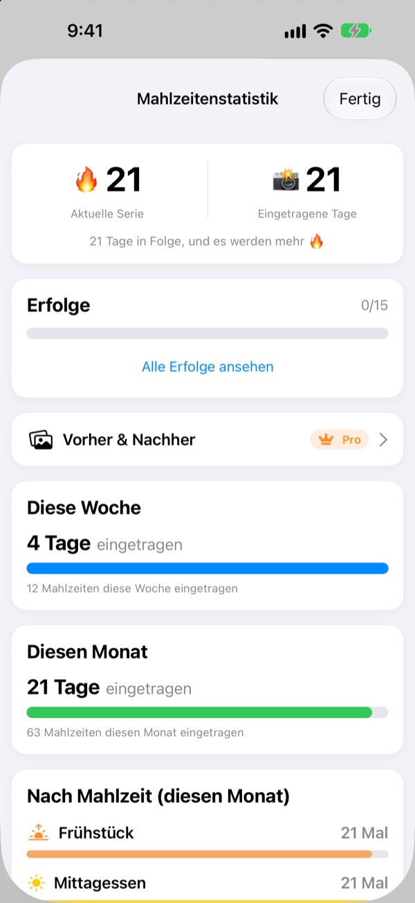
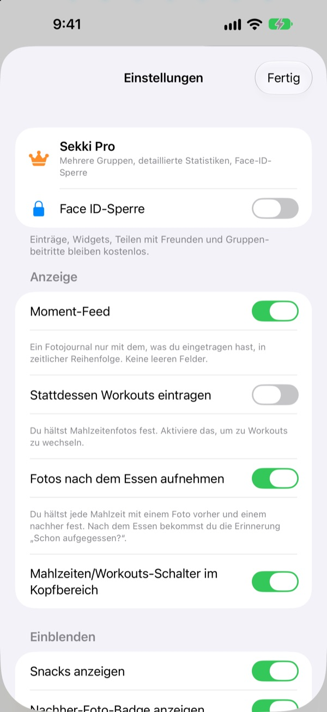

Ein Foto vor dem Essen.
Mehr braucht es nicht.
Sekki schaut, wann das Foto entstand, und ordnet es Frühstück, Mittagessen, Abendessen oder Snack zu. Schon eine Mahlzeit am Tag hält deine Serie am Laufen.
Eintragen, Statistiken, Widgets und Teilen mit Freunden sind kostenlos.

Probier es selbst
Wähl eine Uhrzeit und tipp auf die Eintragen-Taste. Wie in der App zeigt die Taste schon die passende Mahlzeit an.
Ein Essenstagebuch nach drei Tagen aufgegeben?
Einmal das Frühstück ausgelassen, zweimal das Abendessen vergessen, und die leeren Felder nerven, bis die App gelöscht ist. Sekki hat keine leeren Felder. Nur eingetragene Mahlzeiten sammeln sich der Reihe nach, und ein einziges Foto lässt den Tag zählen.
Foto machen, Mahlzeit steht
Nach der Aufnahmezeit ordnet Sekki das Foto Frühstück, Mittagessen, Abendessen oder Snack zu. Füg Vorher- und Nachher-Fotos hinzu, trag ohne Foto ein oder schreib eine Notiz.
Das Essen wird kostenlos auf dem Gerät erkannt, und deine Fotos verlassen nie dein iPhone.

Ein Tagebuch, das nicht schrumpft
Eine Mahlzeit am Tag hält die Serie, und die Gesamtzahl eingetragener Tage sinkt nie. Wochen- und Monatsstatistik zeigen, an wie vielen Tagen und zu wie vielen Mahlzeiten du eingetragen hast, statt einer Erfüllungsquote.
Unterwegs sammelst du Erfolge wie 7 Tage in Folge oder Frühaufsteher.

Nur die Mahlzeiten, die dir wichtig sind, ohne die App zu öffnen
Wähl, an welche Mahlzeiten du erinnert werden willst, und pass die Uhrzeiten an deinen Alltag an. Nach dem Vorher-Foto markierst du Fertig gegessen direkt in der Mitteilung.
Eintragen geht auch über die Aktionstaste, Siri, Kurzbefehle oder ein Widget, und mit einem Code fügst du Freunde hinzu und feuerst euch mit Emojis und Kommentaren an.

In drei Schritten loslegen
- 1
Mahlzeiten wählen
Beim ersten Start fragt Sekki, an welche Mahlzeiten es dich erinnern soll. Änderbar in den Einstellungen.
- 2
Foto vor dem Essen
Die Eintragen-Taste zeigt schon die Mahlzeit zur aktuellen Uhrzeit. Tippen, knipsen, fertig.
- 3
Nach dem Essen tippen
In der Mitteilung oder im Widget auf Fertig gegessen tippen oder ein Nachher-Foto ergänzen.
Eintragen, ohne die App zu öffnen
- Mitteilung
- Nach dem Vorher-Foto direkt aus der Mitteilung Fertig gegessen markieren
- Home-Bildschirm-Widget
- Heutige Einträge und die laufende Mahlzeit sehen, dann Fertig gegessen tippen
- Sperrbildschirm-Widgets
- Rechteckig, rund und einzeilig
- Aktionstaste · Siri · Kurzbefehle
- Fertig gegessen mit einem Tastendruck oder einem Satz
- In Fotos speichern
- In den Einstellungen einschalten, dann landen Mahlzeiten und Workouts in eigenen Sekki-Alben
- Workout-Modus
- Workouts liegen getrennt von Mahlzeiten, mit der Zahl der Trainings im Monat auf einen Blick
Die Taste Fertig gegessen im Widget braucht iOS 17 oder neuer.
Eintragen ist kostenlos. Sekki Pro geht tiefer.
Kostenlos
- Foto-Einträge mit automatischer Zuordnung, Vorher- und Nachher-Fotos, Notizen
- Serien, Gesamttage, Wochen- und Monatsstatistik, Erfolge
- Erinnerungen an deine Mahlzeiten, Fertig gegessen ohne App
- Widgets, Aktionstaste, Siri und Kurzbefehle
- Mahlzeiten und Workouts mit Freunden teilen, Emojis und Kommentare
- Eine Gruppe erstellen, beliebig vielen beitreten
- Essenserkennung auf dem Gerät
Sekki Pro
- Mehrere Gruppen für Familie, Arbeit oder die Trainingsrunde
- Mahlzeiten von vor ein paar Wochen und heute nebeneinander vergleichen
- Sehen, was du am häufigsten isst
- App mit Face ID oder Touch ID sperren
Jahres- oder Monatsabo oder ein einmaliger Kauf auf Lebenszeit
Abos verlängern sich automatisch, wenn sie nicht mindestens 24 Stunden vor Ablauf gekündigt werden. Kündigen jederzeit unter Einstellungen > Apple Account > Abonnements. Nutzungsbedingungen: m1zz.github.io/RoutineCamera/de/terms.html
Häufige Fragen
Wo werden meine Fotos gespeichert?
Auf deinem Gerät. Schaltest du in den Einstellungen Automatisch in Fotos speichern ein, landen sie auch in den Sekki-Alben in Fotos. Solange Meine Mahlzeiten teilen an ist (anfangs ist es an), werden sie in iCloud hochgeladen, damit hinzugefügte Freunde sie sehen. Ausschalten kannst du das unter Einstellungen > Account & Teilen.
Wie füge ich Freunde hinzu?
Teil auf dem Freunde-Bildschirm deinen sechsstelligen Code und gib den Code deines Freundes ein. Mehrere Codes kannst du durch Kommas getrennt auf einmal einfügen.
Wie feuere ich Freunde an?
Öffne eine Mahlzeit deines Freundes und hinterlass ein Emoji oder einen kurzen Kommentar. Hat er noch nichts eingetragen, tipp auf das leere Feld, um ihn sanft anzustupsen.
Reißt die Serie, wenn ich eine Mahlzeit auslasse?
Nein. Trag an dem Tag irgendeine Mahlzeit ein, Snacks inklusive, und die Serie läuft weiter. Selbst wenn ein ganzer Tag ausfällt, sinkt die Gesamtzahl eingetragener Tage nicht.
Ich bekomme keine Mitteilungen.
Prüf unter iOS-Einstellungen > Mitteilungen, ob Mitteilungen für Sekki erlaubt sind, und ob das Gerät bei iCloud angemeldet ist. Die Erinnerungszeiten änderst du in den Einstellungen der App.
Schickt die Essenserkennung meine Fotos an einen Server?
Nein. Sie läuft auf dem Gerät, deine Fotos verlassen nie dein iPhone. Kostenlos und ohne Limit.
Wie lösche ich meinen Account und meine Daten?
Unter Freunde > Account > Account löschen. Account und Mahlzeitendaten auf dem Server werden gelöscht und lassen sich nicht wiederherstellen. Klappt etwas nicht, schreib uns.
Wie kündige ich das Abo?
Unter Einstellungen > Apple Account > Abonnements. Es verlängert sich automatisch, wenn du nicht mindestens 24 Stunden vor Ablauf kündigst. Der Kauf auf Lebenszeit wird einmal bezahlt.
Fehler, Ideen oder Fragen zum Account: schreib an leeo@kakao.com oder per DM an @lee25_ios auf Instagram. Wir antworten meist innerhalb von ein, zwei Tagen.